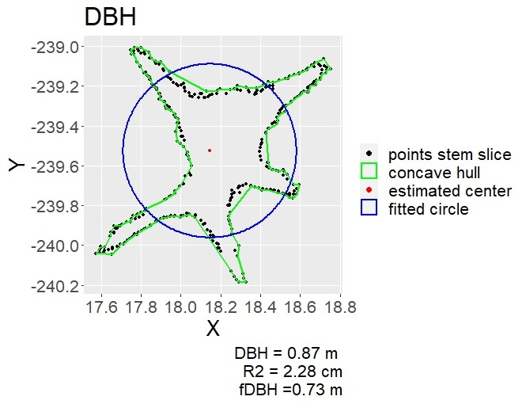
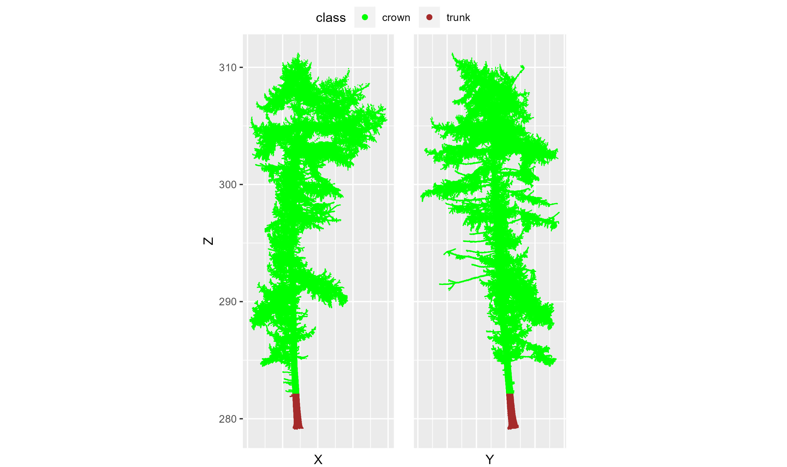

Goal
The goal of the ITSMe (Individual Tree Structural Metrics) R package is to provide easy to use functions to quickly obtain structural metrics from individual tree point clouds and their respective TreeQSMs.
Point cloud based metrics
Overview
An overview of the basic structural metrics which can be measured from an individual tree point cloud with the ITSMe package:
| structural metric | function name |
|---|---|
| diameter at breast height (m) | dbh_pc |
| diameter above buttresses (m) | dab_pc |
| tree height (m) | tree_height_pc |
| projected crown area (m\(^{2}\)) | projected_crown_area_pc |
| crown volume (m\(^{3}\)) | volume_crown_pc |
Tree point cloud requirements
The tree point cloud based functions were developed for point clouds acquired with TLS. But they can also be used for tree point clouds obtained from other LiDAR platforms (e.g. MLS, UAV-LS) if their point densities are high enough (e.g. sufficient stem points for DBH measurement).
Make sure outliers are removed. Down sampling of the point cloud is not required but can reduce computation time for very big tree point clouds.
Workflow for a single tree
Before running the functions on multiple tree point clouds at a time, it is advised to get familiar with the functions by running them on a single tree point cloud.
Read the point cloud
All of the point cloud based functions (mentioned above) need a tree point cloud in the form of a data.frame with columns X, Y, Z as their fist argument. The ITSME package provides a function read_tree_pc1 which takes the path to a tree point cloud file (txt, ply or las) as an argument and returns a data.frame with X, Y, Z columns.
# Read the point cloud file from its' specified path
tree_pc <- read_tree_pc(path = "path/to/point/cloud.txt")Measure position of tree point cloud
The position of the tree can be easily determined using tree_position_pc, which determines the mean X and Y value of the tree point cloud at breast height (1.27 m - 1.33 m).
# Measure tree position from the tree point cloud
XY_pos <- tree_position_pc(pc = tree_pc)Measure tree height
The tree height can be measured using tree_height_pc as the difference between the Z-value of the highest and lowest point of the tree point cloud. tree_height_pc only needs the tree point cloud as an input.
# Measure tree height from the tree point cloud
H <- tree_height_pc(pc = tree_pc)For tree point clouds that are obtained with airborne LiDAR (ALS, UAV-MLS) and that do not sample the base of the tree sufficiently it is not recommended to use tree_height_pc. In those cases it is better to determine tree height using a digital terrain model.
Measure DBH and/or DAB
Depending on if your trees are buttressed or not, you will make a choice between the diameter at breast height (DBH) and the diameter above buttresses (DAB).
The DBH is measured using dbh_pc as the diameter of the optimal circle fitted through a 6mm thick horizontal slice (from 1.27 m to 1.33 m above the lowest tree point). The dbh_pc function only needs the tree point cloud as an input, but if the second argument plot is set TRUE it also plots the circle fitting.
# Measure DBH from the tree point cloud and plot the circle fitting
DBH <- dbh_pc(pc = tree_pc, plot = TRUE)
For some trees (mainly tropical, buttressed trees), dbh_pc could result in:

In this case determining the DAB with dab_pc is the better option. With dab_pc, the diameter (from the optimal circle fitted through a 6mm thick horizontal slice) is measured above the buttresses. The height at which the horizontal slice is taken (the height above buttresses), is determined iteratively, starting at breast height. The average residual between the points and the fitted circle is calculated. When the average residual exceeds a value of thresholdbuttress times the radius, indicating a non-circular (irregular) stem shape and presumably buttresses, and the maxbuttressheight is not exceeded, the process is repeated with a new slice 6 mm higher than the previous one. When the maxbuttressheight is exceeded the iterative process is restarted with a thresholdbuttress increased with 0.0005.
# Measure DAB from the tree point cloud with default settings and plot the circle fitting
DAB <- dab_pc(pc = tree_pc, plot = TRUE)
Optimise the values of thresholdbuttress and or maxbuttressheight for your tree if default values do not lead to the desired results:
- reduce/increase thresholdbuttress if the height above buttresses is consistenly too low/high.
- reduce/increase maxbuttressheight if your buttresses reach lower/higher heights.
The dbh_pc and dab_pc do not yet take into account (very) slanted trees. Therefore it is advised to always check the plots of the circle fitting.
For tree point clouds that are obtained with airborne LiDAR (ALS, UAV-MLS) and that do not sample the stem of the tree sufficiently dbh_pc and dab_pc will not work due to a lack of stem points.
Classify crown points
As a basis for crown metrics (e.g. projected crown area and crown volume) the classify_crown_pc is be used to return the points from the tree point cloud that belong to the crown. The crown is defined here as all points of the tree except for the stem points below the first branch. The height where the first branch emerges is iteratively determined (starting from minheight) as the height where the diameter of the stem exceeds thresholdbranch multiplied with the DBH or DAB.
# Classify the tree point cloud with default settings and plot the classification results
crown_pc <- classify_crown_pc(pc = tree_pc, plot = TRUE)
Optimise the values of thresholdbranch and or minheight for your tree if default values do not lead to the desired results:
- reduce/increase thresholdbranch if the crown height is consistently determined too high/low.
- reduce minheight if the height at which the crown starts is typically lower.
- increase minheight to the height above the widest part of the lower stem (for example above the buttresses).
For buttressed trees, the attribute buttress has to be set TRUE and previously chosen attributes thresholdbuttress and maxbuttressheight can be specified. It is recommended to increase the minheight for buttressed trees.
# Classify the tree point cloud of a buttressed tree and plot the classification results
crown_pc <- classify_crown_pc(pc = tree_pc, minheight = 4, buttress = TRUE,
plot = TRUE)
Measure the projected crown area
The projected crown area (PCA) of a tree point cloud can be measured with projected_crown_area_pc which calculates the area of a concave hull (based on concaveman) fitted to the crown points obtained with classify_crown_pc. As projected_crown_area_pc uses classify_crown_pc, it takes the same attributes. You can however, also specify concavity (default=2).
# Measure the pca of a tree point cloud of a buttressed tree and plot the result
PCA <- projected_crown_area_pc(pc = tree_pc, minheight = 4, buttress = TRUE,
plot = TRUE)
Measure the crown volume
The crown volume (CV) of tree point cloud can be measured with volume_crown_pc which calculates the volume of the 3D alpha-shape (based on alphashape3d) fitted to the crown points obtained with classify_crown_pc. As volume_crown_pc uses classify_crown_pc, it takes the same attributes. You can however, also specify alpha (default=1).
# Measure the crown volume of a tree point cloud of a buttressed tree and generate 3D plot
CV <- volume_crown_pc(pc = tree_pc, minheight = 4, buttress = TRUE, plot = TRUE)
Workflow for multiple trees
Optimise and plot
Often you want to check or optimise the performance of the default attributes used in DBH, DAB, crown classification, PCA, and CV calculation, for multiple tree point clouds in one folder. For this purpose you can use plot_dbh_fit_pcs (based on dbh_pc), plot_dab_fit_pcs (based on dab_pc), plot_crown_classification_pcs (based on classify_crown_pc), plot_pca_pcs (based on projected_crown_area_pc), plot_cv_pcs (based on volume_crown_pc) which return the DBH, DAB, PCA and CV for each tree in a folder (PCs_path) and save the respective figures in the given output path
(OUT_path). First run these functions with default parameters and check the rendered figures. Optionally change the attributes of the functions:
-
plot_dab_fit_pcs: thresholdbuttress, maxbuttressheight -
classify_crown_pc: thresholdbranch, minheight -
plot_pca_pcs&volume_crown_pc: concavity & alpha
# Run plot_dbh_fit_pcs to see if buttresses influence dbh calculation and
# dab calculation is necesarry
DBHs <- plot_dbh_fit_pcs(PCs_path = "path/to/point/clouds/folder/" ,
extension = ".ply",
OUT_path = "path/to/output/folder/")
# For buttressed trees:
# try out different values for thresholdbuttress and maxbuttressheight
DABs <- plot_dab_fit_pcs(PCs_path = "path/to/point/clouds/folder/" ,
extension = ".las",
OUT_path = "path/to/output/folder/",
thresholdbuttress = 0.002, maxbuttressheight = 9)
# Try out different values for thresholdbranch and minheight
# For other attributes: use the values chosen in previous steps
# For non-buttressed trees: leave out buttress, thresholdbuttress and maxbuttressheight
plot_crown_classification_pcs(PCs_path = "path/to/point/clouds/folder/" ,
extension = ".txt",
OUT_path = "path/to/output/folder/",
thresholdbranch = 2, minheight = 3, buttress = TRUE,
thresholdbuttress = 0.002, maxbuttressheight = 9)
# Try out a different value for concavity
# For other attributes: use the values chosen in previous steps
PCAs <- plot_pca_pcs(PCs_path = "path/to/point/clouds/folder/" ,
extension = ".ply",
OUT_path = "path/to/output/folder/", concavity = 3,
thresholdbranch = 2, minheight = 3, buttress = TRUE,
thresholdbuttress = 0.002, maxbuttressheight = 9)
# Try out a different value for alpha
# For other attributes: use the values chosen in previous steps
CVs <- plot_cv_pcs(PCs_path = "path/to/point/clouds/folder/" ,
extension = ".las",
OUT_path = "path/to/output/folder/", alpha = 2,
thresholdbranch = 2, minheight = 3, buttress = TRUE,
thresholdbuttress = 0.002, maxbuttressheight = 9)Summarise
Once you have decided on default/optimised attributes, you can summarise all point cloud structural metrics in one data.frame (and optionally export it to a csv file) for all tree point clouds in a folder with summary_basic_pointcloud_metrics.
# Summary with default setting for non-buttressed trees
summary <- summary_basic_pointcloud_metrics(PCs_path = "path/to/point/clouds/folder/")
# Summary with default setting (except minheight and buttress) for buttressed trees
summary <- summary_basic_pointcloud_metrics(PCs_path = "path/to/point/clouds/folder/",
minheight = 4, buttress = TRUE)QSM based metrics
Overview
At the moment the ITSMe package contains TreeQSM based structural metrics defined by Åkerblom et al. (2017) and Terryn et al. (2020).
Structural metrics from Terryn et al. (2020)
These are the metrics defined in Terryn et al. (2020) which were copied and adapted from Åkerblom et al. (2017) except for the branch angle ratio and the relative volume ratio which were new metrics. Definitions of the metrics can be found in the help files of the functions and the papers of Terryn et al. (2020) and Åkerblom et al. (2017). Normalisation according to Terryn et al. (2020) as well as Åkerblom et al. (2017) is possible through the normalisation parameter included in the functions of the metrics that were adapted by Terryn et al. (2020). If the tree point cloud is provided along with the TreeQSM in the functions, DBH or DAB and tree height values are based on the point clouds rather than the QSMs. When the buttress parameter is indicated “TRUE” the DAB instead of the DBH is used.
| structural metric | function name | input |
|---|---|---|
| stem branch angle (degrees) | stem_branch_angle_qsm | TreeQSM |
| stem branch cluster size | stem_branch_cluster_size_qsm | TreeQSM |
| stem branch radius (-/m) | stem_branch_radius_qsm | TreeQSM (+point cloud) |
| stem branch length (-/m) | stem_branch_length_qsm | TreeQSM (+point cloud) |
| stem branch distance (-/m) | stem_branch_distance_qsm | TreeQSM (+point cloud) |
| dbh tree height ratio | dbh_height_ratio_qsm | TreeQSM (+point cloud) |
| dbh tree volume ratio (m\(^{-2}\)) | dbh_volume_ratio_qsm | TreeQSM (+point cloud) |
| volume below 55 | volume_below_55_qsm | TreeQSM |
| cylinder length volume ratio (m\(^{-2}\)) | cylinder_length_volume_ratio_qsm | TreeQSM |
| shedding ratio | shedding_ratio_qsm | TreeQSM |
| branch angle ratio | branch_angle_ratio_qsm | TreeQSM |
| relative volume ratio | relative_volume_ratio_qsm | TreeQSM |
| crown start height | crown_start_height_qsm | TreeQSM (+point cloud) |
| crown height | crown_height_qsm | TreeQSM (+point cloud) |
| crown evenness | crown_evenness_qsm | TreeQSM |
| crown diameter crown height ratio | crown_diameterheight_ratio_qsm | TreeQSM (+point cloud) |
| dbh minimum tree radius ratio | dbh_minradius_ratio_qsm | TreeQSM (+point cloud) |
Workflow for a single tree
Read the TreeQSM
All of the TreeQSM based functions (mentioned above) need one or multiple components (e.g. cylinder, branch, treedata) of a TreeQSM in the form of lists as their fist arguments. The ITSME package provides a function read_tree_qsm which reads a TreeQSM matlab file (.mat) and returns its’ components in a list (and optionally saves the TreeQSM components into the global environment when global = TRUE). It requires the path to the TreeQSM .mat file as a first argument and the TreeQSM version as a second (default = “2.4.0”) argument.
# Read the TreeQSM file from its' specified path
qsm <- read_tree_qsm(path = "path/to/treeqsm.mat")
# Read the TreeQSM file of version "2.3.0" from its' specified path into the global environment
qsm <- read_tree_qsm(path = "path/to/treeqsm.mat", version = "2.3.0",
global = TRUE)Exract metrics Terryn et al. (2020)
After reading in the TreeQSM, the 17 different structural metrics listed in the table above can easily be calculated. Some of these structural metrics rely on only one of the TreeQSM components.
# Calculate the stem branch angle and branch angle ratio from the branch component
sba <- stem_branch_angle_qsm(branch = qsm$branch)
bar <- branch_angle_ratio_qsm(branch = qsm$branch)
# Calculate stem branch cluster size and crown evenness from the cylinder component
sbcs <- stem_branch_cluster_size_qsm(cylinder = qsm$cylinder)
ce <- crown_evenness_qsm(cylinder = qsm$cylinder)
# Calculate the cylinder length volume ratio from the treedata component
clvr <- cylinder_length_volume_ratio_qsm(treedata = qsm$treedata)Other metrics rely on two of the TreeQSM components.
# Calculate the volume below 55 and the relative volume ratio from
# the cylinder and treedata component
vol_55 <- volume_below_55_qsm(cylinder = qsm$cylinder, treedata = qsm$treedata)
relvol_ratio <- relative_volume_ratio_qsm(cylinder = qsm$cylinder,
treedata = qsm$treedata)
# Calculate the shedding ratio from the branch and treedata component
shed_ratio <- shedding_ratio_qsm(branch = qsm$branch, treedata = qsm$treedata)For some of the metrics which involve the DBH/DAB and/or the tree height, the tree point cloud of the tree can be provided as an input besides the TreeQSM data. This is because (in general) the DBH/DAB and tree height are more accurately measured from the complete tree point cloud. When the DBH is involved the DAB will be used if buttress = TRUE.
# Read the tree point cloud
tree_pc <- read_tree_pc(path = "path/to/point/cloud.txt")
# Calculate the dbh min tree radius and volume ratio using additional point cloud data
dmrr <- dbh_minradius_ratio_qsm(treedata = qsm$treedata,
cylinder = qsm$cylinder, pc = tree_pc)
dvr <- dbh_volume_ratio_qsm(treedata = qsm$treedata, pc = tree_pc)
# Calculate the dbh height ratio of a buttressed tree using additional point cloud data
# Specify the optimised thresholdbuttress and maxbuttressheight when needed
dhr <- dbh_height_ratio_qsm(treedata = qsm$treedata, pc = tree_pc,
buttress = TRUE, thresholdbuttress = 0.002,
maxbuttressheight = 5)
# Calculate the crown start height, crown height and crown diameter height ratio
# using additional point cloud data
csh <- crown_start_height_qsm(treedata = qsm$treedata, cylinder = qsm$cylinder,
pc = tree_pc)
ch <- crown_height_qsm(treedata = qsm$treedata, cylinder = qsm$cylinder,
pc = tree_pc)
cdhr <- crown_diameterheight_ratio_qsm(treedata = qsm$treedata,
cylinder = qsm$cylinder,
pc =tree_pc)Normalisation according to Terryn et al. (2020) as well as Åkerblom et al. (2017) is possible through the normalisation parameter included in the functions of the metrics that were adapted by Terryn et al. (2020).
# Calculate the stem branch radius according to Åkerblom et al. (2017)
sbr <- stem_branch_radius_qsm(cylinder = qsm$cylinder, treedata = qsm$treedata,
normalisation = "parentcylinder")
# Calculate the stem branch length according to Terryn et al. (2020)
sbl <- stem_branch_length_qsm(branch = qsm$branch, treedata = qsm$treedata,
normalisation = "treeheight")
# Calculate the stem branch distance according to Åkerblom et al. (2017) and
# using point cloud information
sbd <- stem_branch_distance_qsm(cylinder = qsm$cylinder,
treedata = qsm$treedata, normalisation = "dbh",
pc = tree_pc, buttress = TRUE,
thresholdbuttress = 0.002,
maxbuttressheight = 5)Workflow for multiple trees
Summarise metrics Terryn et al. (2020)
you can summarise all structural metrics defined by Terryn et al. (2020) in one data.frame (and optionally export it to a csv file) for all TreeQSMs in a folder with summary_Terryn_2020. Choose the normalisation for stem_branch_radius_qsm, stem_branch_length_qsm, and stem_branch_distance_qsm. In case you want to use tree point cloud information, specify the folder (PCs_path) and extension of the tree point cloud files, indicate if the trees have buttresses (buttress) and specify if you want to use non-default argument values (thresholdbuttress and maxbuttressheight) to calculate the DAB (see chapter on point cloud metrics). If you want the data.frame to be exported to a csv file, specify the path to the output folder (OUT_path)
The QSM files have to be of the format xxx_000_qsm.mat (xxx is the plotname, 000 is the tree number) or xxx_000_qsm_0.mat (0 at the end is for example the n-th QSM that is made for tree 000). When multiple QSMs are provided for one tree the mean and the standard deviation of the values of the different QSMs of one tree are also returned in additional data.frames. When provided, the tree point clouds files have to be of the format xxx_000_pc in order to link the tree point cloud to its’ respective treeQSM.
# Run the summary function with default settings (without point cloud info)
summary_Terryn_2020(QSMs_path = "path/to/treeqsm/folder/")
# Run the summary function with default settings with point cloud info
summary_Terryn_2020(QSMs_path = "path/to/treeqsms/folder/",
PCs_path = "path/to/point/clouds/folder/")
# Run the summary function with non-default settings with point cloud info
summary_Terryn_2020(QSMs_path = "path/to/treeqsms/folder/", version = "2.4.0",
sbr_normalisation = "parentcylinder",
sbl_normalisation = "dbh", sbd_normalisation = "dbh",
PCs_path = "path/to/point/clouds/folder/",
extension = ".ply", buttress = TRUE,
thresholdbuttress = 0.002, maxbuttressheight = 5,
OUT_path = "path/to/output/folder/")